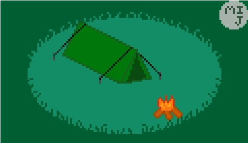

Sample Paragraph before showing the images on the page.
As it was scaled up by using Microsoft Paint -- as I didn't knew gimp could also be used to scale it without blurring it -- so it left white empty spaces in the top and left of the canvas, I didn't noticed them before posting it on Twitter. So I left it like that and didn't bothered to do anything except for avoiding it from next time.